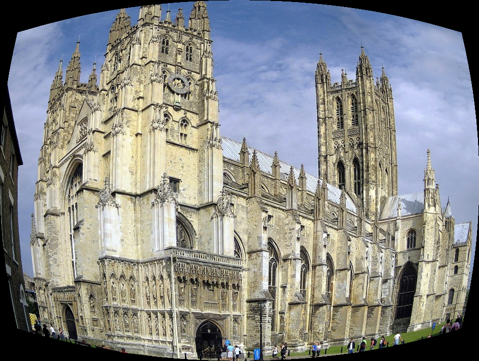
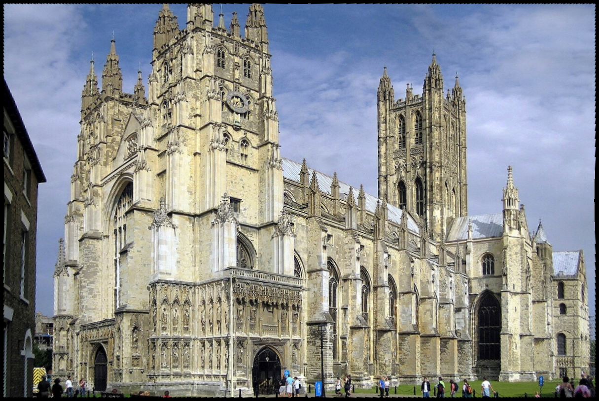
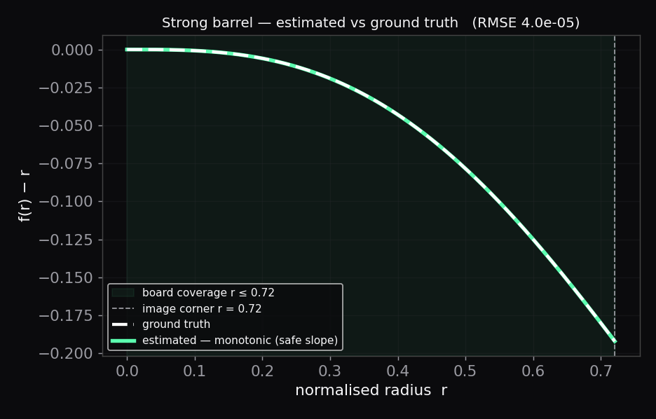
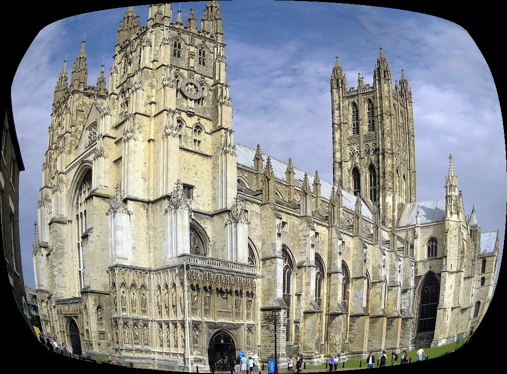
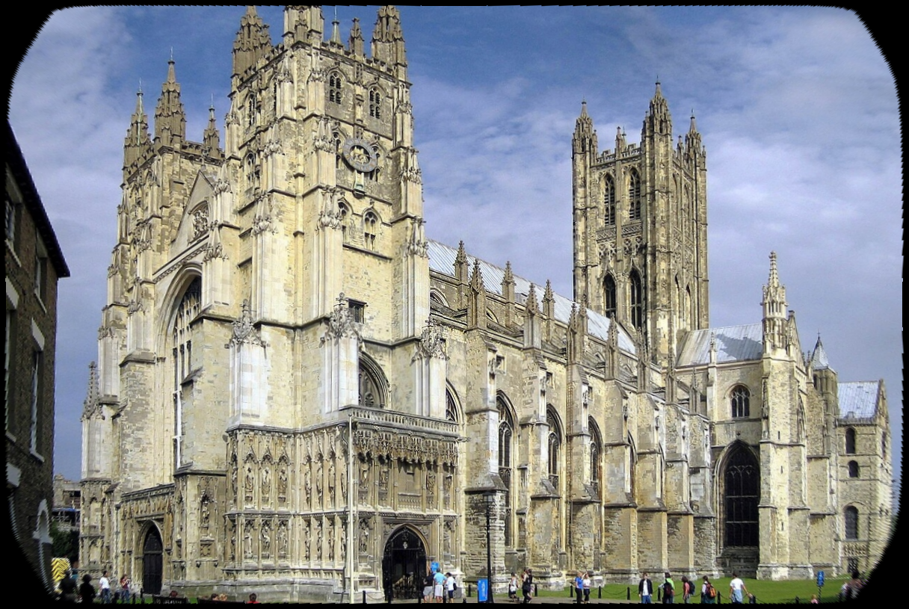
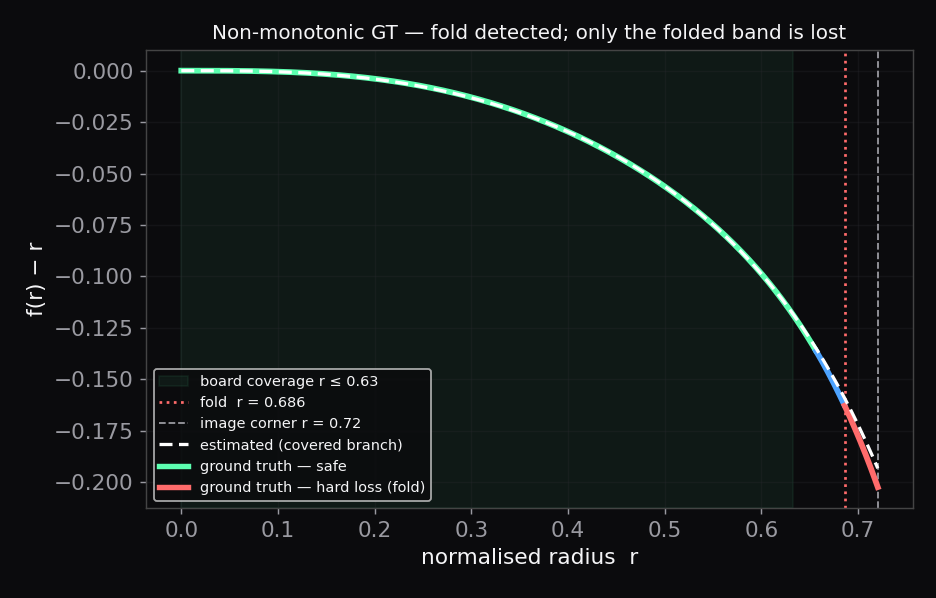

A suite of commercial tools for
forward distortion modeling, physical validity control,
parameter estimation, and safe inverse undistortion —
available in MATLAB and Python.
Three design decisions that distinguish this toolbox from OpenCV, MATLAB's Camera Calibration Toolbox, and standard calibration libraries.
Polynomial degree and term count are fully user-defined. Odd, even, and mixed-degree terms are all supported. There is no built-in constraint on model complexity.
The inverse mapping uses a pre-computed lookup table with linear interpolation. Round-trip error is bounded at the interpolation-grid level — no convergence loop, no residual accumulation, no local minima.
Every distortion model is evaluated for monotonicity before inversion. Non-monotonic regions are reported as hard loss ratio; low-slope regions as soft loss ratio — quantitative metrics not found in standard literature.
The same pipeline applied to two models that differ by a single higher-order
term — −0.05 · r¹¹. Near the image centre the effect is
negligible; toward the outer field it causes a transition from monotonic to
non-monotonic radial mapping, resulting in irreversible information loss.

Monotonic


Non-Monotonic

A flexible, high-accuracy framework for modeling, applying, and inverting optical distortion. Built on a forward-first philosophy: distortion is explicitly defined, analyzed, and validated before inverse mapping is applied.
No predefined limit on polynomial degree or term count. Models are constrained only by mathematics and physical validity.
LUT-based inverse — not iterative Newton–Raphson. Round-trip error is bounded at interpolation-grid level, eliminating convergence-based residuals.
Automatic detection of non-monotonic mappings, folding, and irreversible information loss before inversion is attempted.
Output canvas size is automatically computed from the distortion model and input field of view.
Balance accuracy, performance, and output resolution independently of pixel size.
Script-based batch processing, clean user-facing error handling, distributed as .mltbx.
The full distortion engine is now available as a standalone Python package. Same forward-first architecture, same physical validity guarantees, same deterministic LUT-based inverse — minimal dependencies, no OpenCV.
Direct port of the MATLAB toolbox for machine learning pipelines, large-scale dataset generation, and research workflows outside MATLAB. Minimal dependencies: NumPy, Pillow, and SciPy only. No OpenCV. No heavy calibration framework.
Commercial · PythonIdentical polynomial distortion model and LUT-based inverse as the MATLAB version. Results are numerically consistent across both.
NumPy, Pillow, SciPy — complete dependency list. No OpenCV, no camera calibration framework, no hidden assumptions.
Built for large-scale synthetic dataset generation and augmentation pipelines where MATLAB is not available.
Full hard/soft loss monotonicity analysis included — the same diagnostic framework as the MATLAB toolbox.
Estimates polynomial distortion coefficients from checkerboard calibration images using a fully deterministic pipeline — a direct linear least-squares system, no iterative optimisation. Both estimation and undistortion are deterministic by construction.
Estimation solves A · constants = Δr in a single
lstsq call — no iterative optimizer, no convergence risk,
no local minima. The result is an explicit, inspectable polynomial model
that feeds directly into the distortion engine.
6-term polynomial with mixed odd and even degrees [2, 3, 5, 6, 9, 11] — a model not expressible in OpenCV or standard calibration tools. Five boards at different FOV positions. The estimated function matches ground truth across the covered radial range; the coefficient table reveals the sub-machine-epsilon recovery.
A linear system solved once — A[k,m] = r_in[k]^degree[m].
No iterative optimizer, no convergence risk, no local minima.
Harris detection, sub-pixel refinement, and grid sorting implemented from scratch in SciPy — no OpenCV dependency anywhere.
Two-pass algorithm: pass 1 establishes a rough model, pass 2 uses board-centre inversion to refine radial coordinates per board.
Multiple boards at different positions pool into a single fit for better radial FOV coverage. Sigma-clipping rejects outlier corners.
Estimated constants plug directly into distort() and
undistort() — physical validity is checked immediately.
EfficientNet-V2-S trained for checkerboard corner detection — replacing Harris detection for robustness on noisy or low-contrast calibration images.
OpenCV and similar libraries are excellent for parameter estimation and camera calibration. However, they are fundamentally designed around inverse correction, not forward distortion modeling.
Standard tools fix the model to odd degrees r³, r⁵, r⁷ — no even terms, no arbitrary degree, no mixed models.
Non-monotonic mappings, folding, and information loss are not detected or reported. Folding goes undetected silently.
Newton–Raphson inversion carries convergence-based residual error. LUT-based inversion is deterministic: round-trip error is bounded at interpolation-grid level.
The entire suite — engine, corner detection, sub-pixel refinement, estimation — runs on NumPy, Pillow, and SciPy only.
Optical Distortion Lab treats forward distortion as the primary problem — not an afterthought of the inverse correction pipeline.
EfficientNet-V2-S integration into the estimation pipeline for more robust performance on noisy or low-contrast calibration images.
Physically constrained differential calibration methods for advanced optical systems.
Line-based and synthetic image pair estimation, extending beyond checkerboard patterns.
Available as a MATLAB toolbox (.mltbx) and a Python package, under commercial licenses for research and industrial use.
Suitable for universities, research groups, and individual researchers.
For industrial applications, product development, and internal tooling.
Limited evaluation versions available upon request.
📧 ahmet.basaran@opticaldistortionlab.com
🧪 ORCID: 0009-0008-2682-0572
💼 LinkedIn: Ahmet Başaran
💻 GitHub: HeliumNitrate